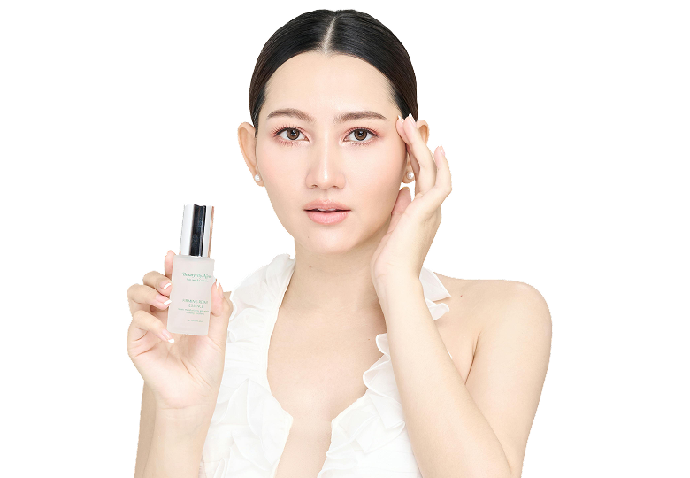
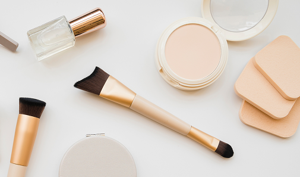

Prodotti
Una selezione di prodotti basata su formula, ingredienti attivi e tipo di pelle. Senza compromessi.

I prodotti skincare sono il cuore di ogni trattamento viso e rappresentano un elemento fondamentale per prendersi cura della pelle anche nella routine quotidiana. Formulati con principi attivi specifici, aiutano a detergere, riequilibrare, idratare e proteggere la pelle, accompagnandola verso un aspetto più sano e luminoso.
Prodotti con alta concentrazione di attivi
Vitamina C 20%
Alta concentrazione per massima luminosità.
Uso mattutino.
Tipo di pelle:tutti
Retinolo 0.5%
Concentrazione media, ideale per iniziare
l'anti-età.
Tipo di pelle: normale, grassa
Glicolico 10%
Esfoliante chimico ad alta efficacia per rinnovamento accelerato.
Tipo di pelle: spessa, mista

I prodotti skincare
Ogni prodotto è pensato per rispondere a esigenze diverse: dalla purificazione delle pelli impure all’idratazione profonda delle pelli più secche,
fino ai trattamenti che aiutano a migliorare tono, elasticità e luminosità.
Utilizzati durante i trattamenti professionali e integrati nella skincare quotidiana, i prodotti permettono di mantenere e prolungare nel tempo
i benefici ottenuti, contribuendo a valorizzare la naturale bellezza della pelle giorno dopo giorno.
Prodotti con alto contenuto naturale
Olio rosa Mosqueta
Rigenerante e nutriente, ricco di omega 3 e 6.
Tipo pelle: secca, matura
Calendula Organica
Lenitiva e anti-infiammatoria per pelli sensibili.
Tipo pelle: sensibile ·
Burro di Karité
Altamente nutriente, non occlude i pori.
Tipo pelle: secca, molto secca
Prodotti con SPF integrato
Crema Giorno SPF 50
Idratante con protezione massima, texture leggera.
Consigliato per: Uso quotidiano
Siero Antiossidante SPF 30
Combina protezione UV e antiossidanti in un passo.
Tipo pelle: normale/mista
Fluido Colorato SPF 50+
Protezione totale con lieve coprenza naturale.
Tipo pelle: chiara
Prodotti su misura
Gel Oil-Free
Idrata senza aggiungere sebo.
Tipo pelle: pelle grassa
Crema Ricca
Nutre e ripara la barriera cutanea.
Tipo di pelle: Pelle secca
Emulsione
Equilibra le diverse zone del viso.
Tipo di pelle: Pelle mista
Crema Lenitiva
Calma arrossamenti e reattività.
Tipo di pelle: Pelle sensibile.
Scopri gli errori
più comuni
Piccoli gesti quotidiani che possono danneggiare la pelle senza che tu te ne accorga.
Scopri come riconoscerli e correggerli.
